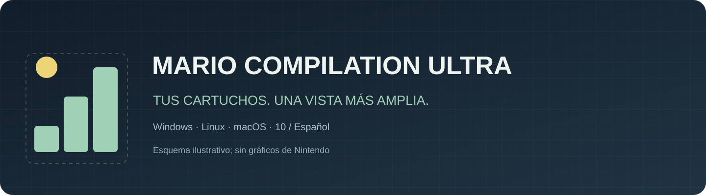
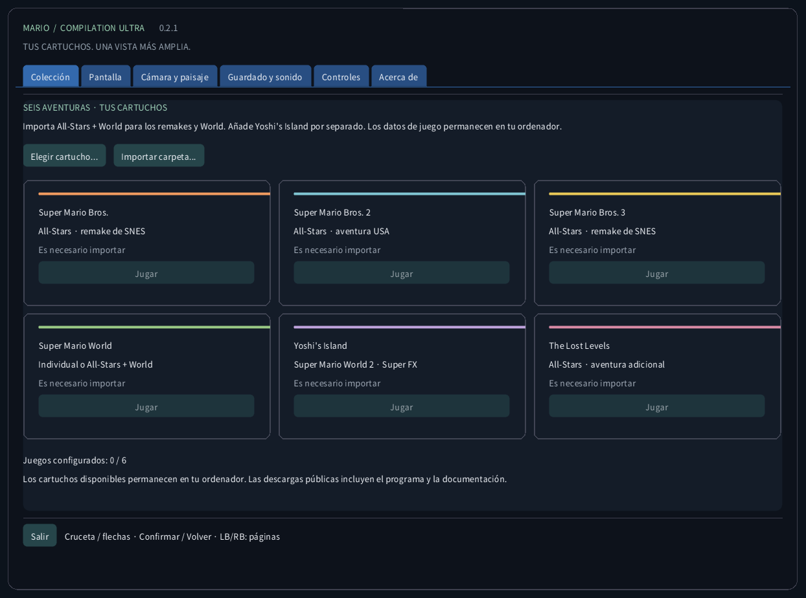
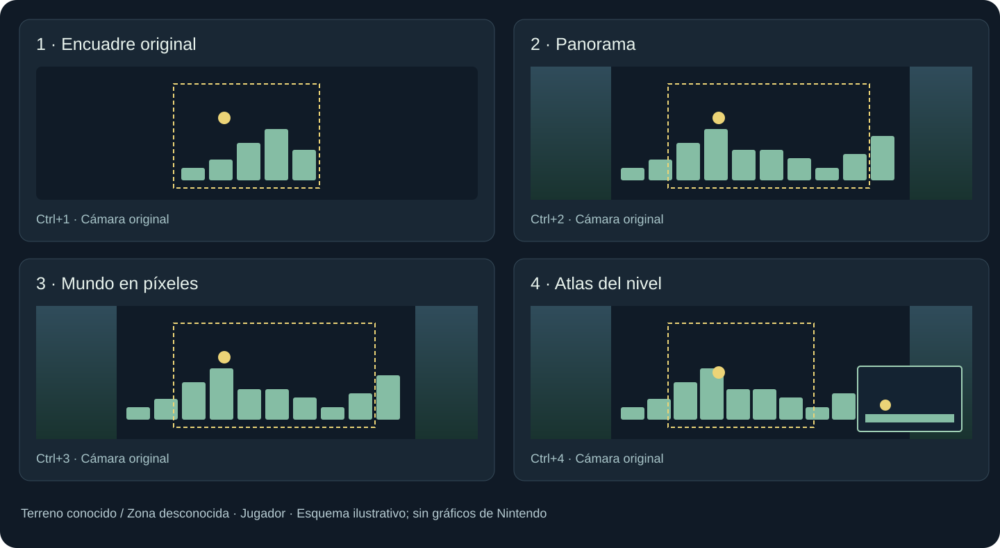
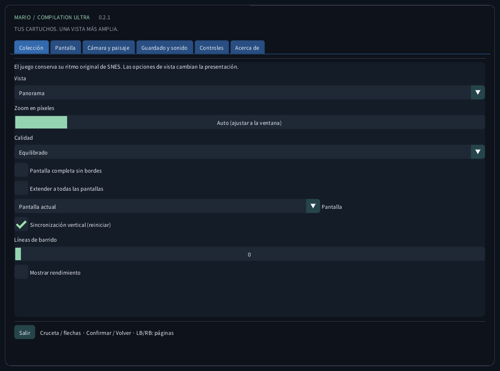
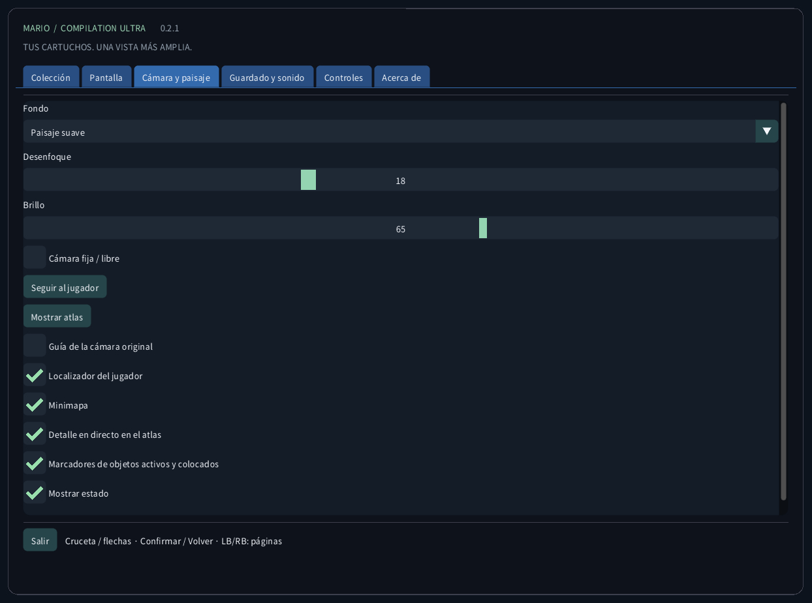
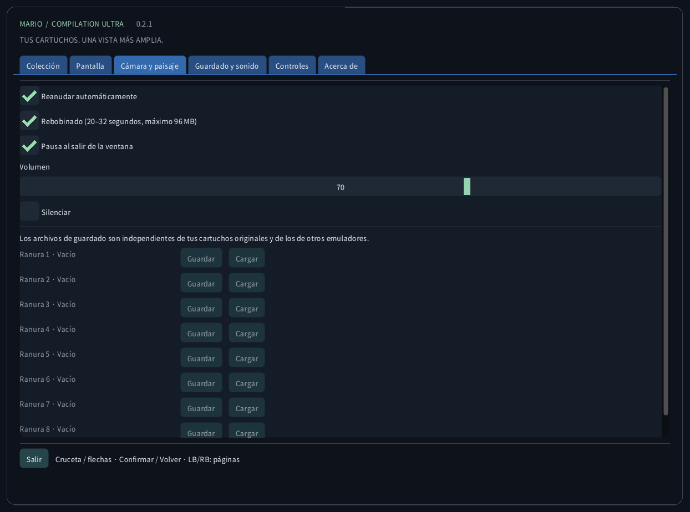
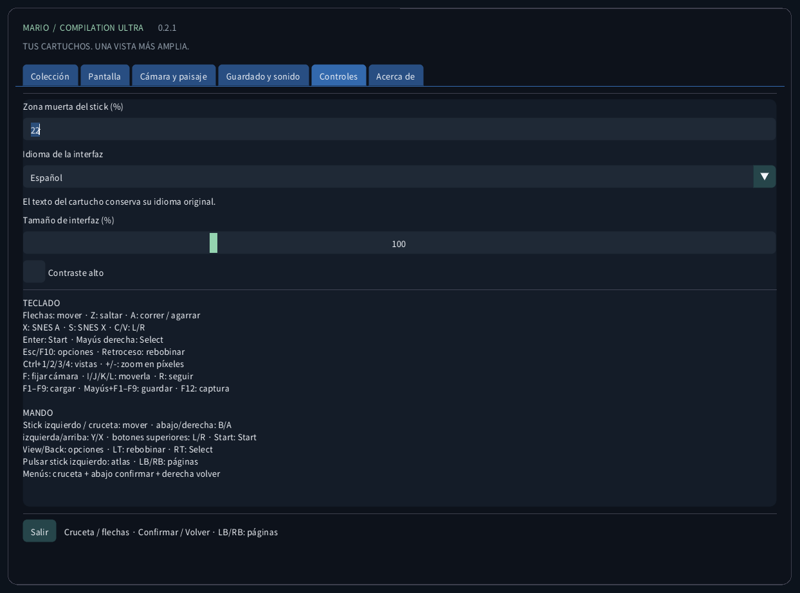
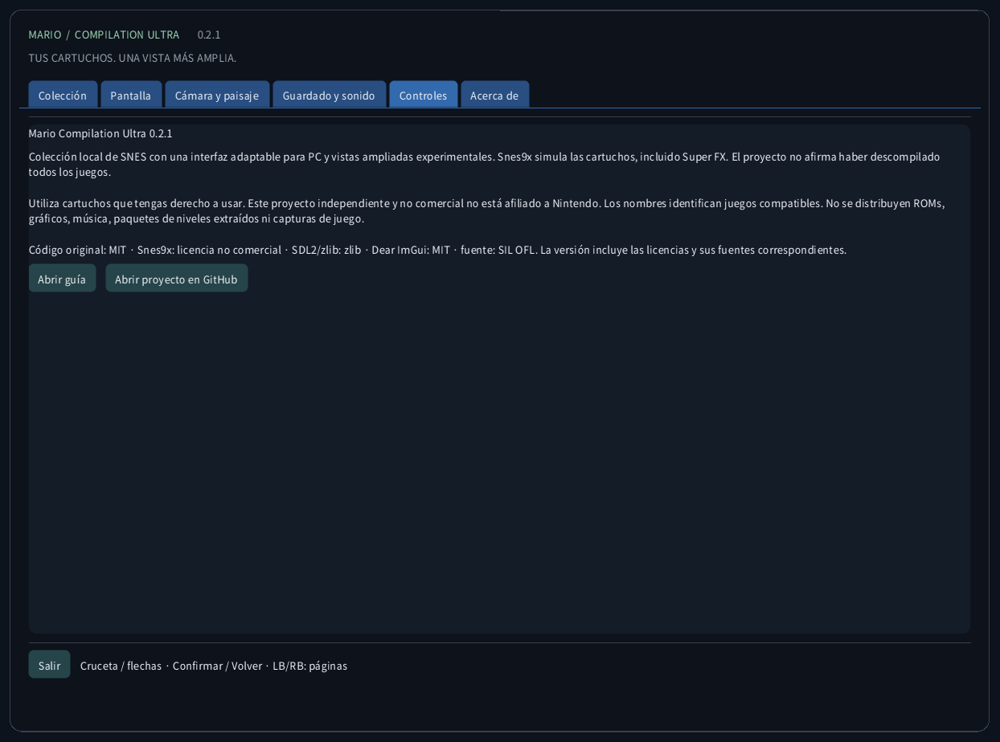

Mario Compilation Ultra 0.2.1
Colección local de SNES con una interfaz adaptable para PC y vistas ampliadas experimentales. Snes9x simula las cartuchos, incluido Super FX. El proyecto no afirma haber descompilado todos los juegos.
Descarga e inicio desde el escritorioDescarga e inicio desde el escritorio
- Descarga el paquete para tu ordenador y extrae todo el ZIP. Mantén juntos el ejecutable, SDL, los recursos y las guías. Windows: abre MarioCompilationUltra.exe. Linux: ejecuta Play.sh. Mac: abre la aplicación.
- Importa tus archivos .sfc, .smc o ZIP de un solo cartucho con Elegir cartucho, Importar carpeta o arrastrar y soltar. El selector abre la carpeta de datos de la aplicación. Los cartuchos compatibles colocados allí se detectan al volver a iniciar.
- All-Stars + Super Mario World incluye Mario Bros. 1, Mario Bros. 2 USA, Mario Bros. 3, World y The Lost Levels. Añade Yoshi’s Island por separado. Elige Jugar y pulsa Enter o Start en el título original; vuelve a pulsar si hay una demo.
Windows: ejecuta Install-Windows.ps1 para copiar el paquete completo a Programs de tu usuario y crear el acceso directo. Linux: ejecuta Install-Linux.sh para registrar esta carpeta en el menú y escritorio. Mac: mueve la app a Aplicaciones y crea un alias. Conserva la carpeta portátil elegida.
Windows: powershell -NoProfile -ExecutionPolicy Bypass -File .\Install-Windows.ps1 Linux: sh ./Install-Linux.sh

Paquetes y validación
- Windows x64: inicio local desde escritorio y ejecución de cartuchos comprobados; también hay pruebas automáticas.
- Linux x64: compilación y pruebas sin ROM automáticas. Juego en un escritorio Linux físico no probado.
- macOS Intel x64 y Apple Silicon arm64: EXPERIMENTAL, NO PROBADO EN UN MAC FÍSICO. Las pruebas automáticas cubren compilación e interfaz sin ROM. Firma ad hoc, sin notarización; mando, sonido, gráficos y Gatekeeper siguen sin verificar en hardware real.
Modos de vista

Panorama es la vista predeterminada. En Mundo de píxeles, elige Automático (ajustar a ventana) para el mayor zoom entero que muestre el cuadro original completo. Hay zooms manuales 1–8. Los atlas observados encuadran lo explorado; World encuadra su área cargada. El fondo exterior repite una región visible válida.
El atlas de World cubre el área cargada, no todas las áreas del juego a la vez. Mario 1, Lost Levels, Mario 2, Mario 3 y escenas normales de Yoshi acumulan terreno observado al avanzar. Lo desconocido queda rayado. Fuera de la cámara original pueden variar efectos y sprites. Las proyecciones especiales usan la imagen original.
Los perfiles de memoria ampliados y la selección automática All-Stars usan las ediciones estadounidenses indicadas. Una edición reconocida sin perfil verificado usa el encuadre original. La traducción de interfaz no traduce la historia ni los gráficos del cartucho comercial. No se afirma una nueva descompilación nativa de los cinco juegos.
| CRC32 | SNES |
|---|---|
f84305b1 | All-Stars + World (US) |
925637c7 | All-Stars (US) |
b19ed489 | Super Mario World (US) |
d138f224 | Yoshi’s Island 1.0 (US) |
cf98ddaa | Yoshi’s Island 1.1 (US) |
Controles
TECLADO Flechas: mover · Z: saltar · A: correr / agarrar X: SNES A · S: SNES X · C/V: L/R Enter: Start · Mayús derecha: Select Esc/F10: opciones · Retroceso: rebobinar Ctrl+1/2/3/4: vistas · +/-: zoom en píxeles F: fijar cámara · I/J/K/L: moverla · R: seguir F1–F9: cargar · Mayús+F1–F9: guardar · F12: captura MANDO Stick izquierdo / cruceta: mover · abajo/derecha: B/A izquierda/arriba: Y/X · botones superiores: L/R · Start: Start View/Back: opciones · LT: rebobinar · RT: Select Pulsar stick izquierdo: atlas · LB/RB: páginas Menús: cruceta + abajo confirmar + derecha volver
Guardado y sonido
Cada juego tiene nueve ranuras, reanudación automática, SRAM y rebobinado limitado. Usa hasta 96 MiB para unos 20–32 segundos. F1–F9 cargan; Shift+F1–F9 guardan. Se comprueban CRC, versión del motor e integridad. Los guardados de otros emuladores quedan separados.
Archivos locales
Esta carpeta contiene settings.ini, referencias a cartuchos, states/, saves/ y screenshots/. Importar no sube el cartucho ni modifica el original. Haz una copia antes de cambiar de ordenador. Los estados dependen del cartucho y motor exactos; SRAM es un archivo separado.
Windows: %APPDATA%/ValentinWittwe/MarioCompilationUltra/ Linux: ~/.local/share/ValentinWittwe/MarioCompilationUltra/ macOS: ~/Library/Application Support/ValentinWittwe/MarioCompilationUltra/
La opción --data-dir sustituye esta ruta. Al actualizar el acceso directo de Windows se conserva esa opción. Archivos locales muestra la carpeta utilizada.
Si un juego aún pide importar
Vuelve a elegir el cartucho si moviste el archivo o desconectaste la unidad. El ZIP debe contener un solo .sfc o .smc sin cifrar y usar almacenamiento o DEFLATE. Comprueba la lista de ediciones y cabeceras. Si faltan fuente o SDL, extrae nuevamente el paquete completo.
Galería de la interfaz real
Las capturas provienen de la aplicación real sin cartucho. Los diagramas usan geometría original ilustrativa, no gráficos del juego. Las descargas públicas no contienen ROMs Nintendo, sprites, música, niveles extraídos ni capturas de partidas.





Paquetes y validación · 0.2.1
Las pruebas públicas cubren 85 comprobaciones, 166 mensajes en diez catálogos, fuentes y 240 capturas reales. Las pruebas privadas de Windows cubren seis juegos, 2.160 configuraciones de pantalla, nueve ranuras, reanudación, SRAM, rebobinado y eventos del mando. Son escenarios limitados, no campañas completas; los botones físicos y el sonido audible no están certificados. Consulta el informe.
CTest / CI · Report · Build